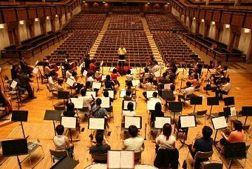

フィルハーモニア・ブルレスケとは？

フィルハーモニア・ブルレスケは、早稲田フィルハーモニー管絃楽団のOB・OGが中心となり結成されたオーケストラです。
「卒業してからも一緒に音楽がしたい！」
「アマチュアらしい、熱い音楽がしたい！」
「学生の頃には出来なかったような曲を取り上げたい！」
という発起人数名の意思に賛同した60余名が集結し、2004年7月4日に第1回定期演奏会を行いました。
一般的なアマチュアオーケストラでは取り上げられる機会の少ない大曲、秘曲を積極的に取り上げ、オーケストラという音源装置の持つ多彩な「色」と、熱い情熱に裏打ちされた「歌」を表現するためのオーケストラを目指しています。